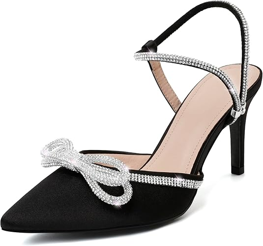
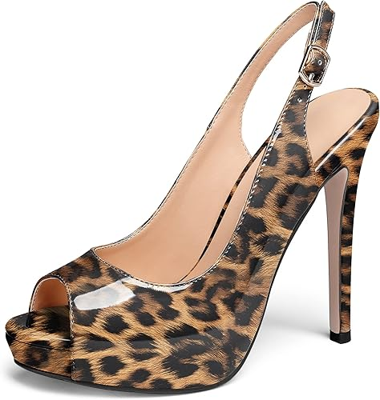
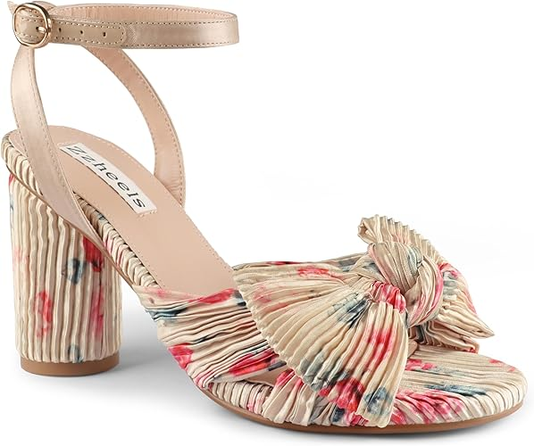
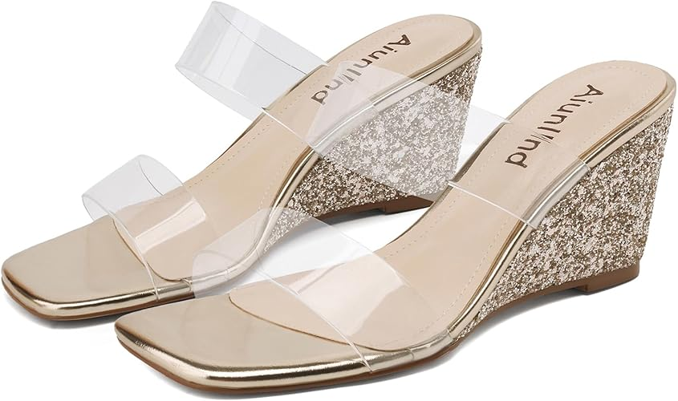

<INPUT TYPE=SUBMIT VALUE="Añadir producto al carrito" ></center>


<html>
<HEAD>
<Title>Zapatos para dama</tiTle>
<!autor: Damaris Menjivar>
</head>
<body BGCOLOR="violet">
<center><font face="Harrington" SIZE=7 COLOR="red">Zapatos para dama</FONT></center>
<HR WIDTH=70% SIZE=10% COLOR="gray">
<FONT SIZE=7 COLOR=black>
<UL TYPE="square">
<Center><LH>Zapatos aguja sin talón para mujer.</LH></font></center>
<font size=5 color=blue>
<center></center>
<Li>Material de la suela: Caucho sintético o elastómero termoplástico.
<Li>Tacones cómodos con diamantes de imitación: altura del tacón de 3 pulgadas. 
<Li> Color: Negro.
<Li> US $35.00
<Li> Sin talón, puntiagudos, con puntera cerrada, correa de tobillo ajustable y lazo con diamantes de imitación transparente, tacón bajo.
<br><INPUT TYPE=CHECKBOX NAME= variable> Opción<br><br></center>
<INPUT TYPE=RADIO NAME= variable VALUE=Talla 6 >Talla 6<BR>
<INPUT TYPE=RADIO NAME= variable VALUE=Talla 7 >Talla 7<BR>
<INPUT TYPE=RADIO NAME= variable VALUE=Talla 8.5>Talla 8.5<BR>
<INPUT TYPE=RADIO NAME= variable VALUE=Talla 9>Talla 9<BR>
</UL></font>
</BODY>
</HTML>


<HR WIDTH=70% SIZE=10% COLOR="gray">
<FONT SIZE=7 COLOR=black>
<UL TYPE="square">
<Center><LH>Zapatos de vestir con plataforma y tacón alto.</LH></font></center>
<font size=5 color=blue>
<center></center>
<Li>Altura del tacón: 5 pulgadas.
<Li>Zapatos de tacón alto con espalda descubierta, comienza con una puntera abierta resaltada por una plataforma. 
<Li> Color: Leopardo.
<Li> US $49.95
<Li> Vienen con un inserto de almohadilla adicional que te permite llevar los zapatos toda la noche sin dolor.
<br><INPUT TYPE=CHECKBOX NAME= variable> Opción<br><br></center>
<INPUT TYPE=RADIO NAME= variable VALUE=Talla 6 >Talla 6<BR>
<INPUT TYPE=RADIO NAME= variable VALUE=Talla 7 >Talla 7<BR>
<INPUT TYPE=RADIO NAME= variable VALUE=Talla 8.5>Talla 8.5<BR>
<INPUT TYPE=RADIO NAME= variable VALUE=Talla 9>Talla 9<BR>
</UL></font>
</BODY>
</HTML>


<HR WIDTH=70% SIZE=10% COLOR="gray">
<FONT SIZE=7 COLOR=black>
<UL TYPE="square">
<Center><LH>Sandalias de tacón con nudo de lazo.</LH></font></center>
<font size=5 color=blue>
<center></center>
<Li>Material de la suela: Caucho.
<Li>Material exterior: Sintético.
<Li>Tipo de cierre: Hebilla.
<Li>Altura del tacón: estos tacones no son demasiado altos, con tacón grueso de 3 pulgadas, llevarlos todo el día no se sentirá cansado.
<Li> Color: "Flower".
<Li> US $15.00
<Li> Pueden ir muy bien con jeans, longuette, faldas, vestidos, pantalones cortos.
<br><INPUT TYPE=CHECKBOX NAME= variable> Opción<br><br></center>
<INPUT TYPE=RADIO NAME= variable VALUE=Talla 6 >Talla 6<BR>
<INPUT TYPE=RADIO NAME= variable VALUE=Talla 7 >Talla 7<BR>
<INPUT TYPE=RADIO NAME= variable VALUE=Talla 8.5>Talla 8.5<BR>
<INPUT TYPE=RADIO NAME= variable VALUE=Talla 9>Talla 9<BR>
</UL></font>
</BODY>
</HTML>


<HR WIDTH=70% SIZE=10% COLOR="gray">
<FONT SIZE=7 COLOR=black>
<UL TYPE="square">
<Center><LH>Sandalias de cuña con punta abierta cuadrada transparentes.</LH></font></center>
<font size=5 color=blue>
<center></center>
<Li>Sandalias de cuña con punta abierta cuadrada, transparentes de dos correas sin cordones.
<Li>Material de la suela: Caucho.
<Li>Material exterior: Cuero sintético.
<Li>Tipo de cierre: Slip on.
<Li>La altura del tacón de las sandalias de cuña es de aproximadamente 2.5 pulgadas.
<Li> Color: Oro.
<Li> US $20.00
<br><INPUT TYPE=CHECKBOX NAME= variable> Opción<br><br></center>
<INPUT TYPE=RADIO NAME= variable VALUE=Talla 6 >Talla 6<BR>
<INPUT TYPE=RADIO NAME= variable VALUE=Talla 7 >Talla 7<BR>
<INPUT TYPE=RADIO NAME= variable VALUE=Talla 8.5>Talla 8.5<BR>
<INPUT TYPE=RADIO NAME= variable VALUE=Talla 9>Talla 9<BR>
</UL></font>
</BODY>
</HTML>

<center><A HREF="Parcial.html">REGRESO AL INICIO</A></center>